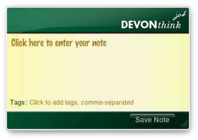

|
|
Dashboard widget |
|
DEVONthink Jot allows you to take notes and send these to DEVONthink Pro Office's default destination right from the Dashboard. The front of the widget is where you can type your note's message. Click into the writing area to make the insertion caret appear. Enter any tags below the note taking area. Click the Take Note button to save the note to your database.  You can also flip the widget front to back by clicking the i button that appears when you move the mouse into the lower left corner of the widget. The back of the widget lets you choose your preferred font. This preference is saved and will be used whenever you open the widget again. Click Done to flip the widget back to the front view. |